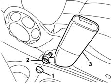

7065A14 ANCHORAGE ROD for , (one), front seat belt left or right - R.R.
- Path
- Procedures > 70 FITTINGS > 7065 SEAT BELTS AND ACCESSORIES > 7065A FRONT SEAT BELTS > 7065A14 ANCHORAGE ROD for , (one), front seat belt left or right - R.R.
- Kind
- repair procedure (removal / refitting; the operation number is the code)
- Applies to
- all engines; all production periods
- Interactive page
- https://sloeber94.github.io/elrnDB-lYpsln/en/#/2429688
Applies to: all engines; all production periods
 Removing
Removing
 Refitting
Refitting1. Remove the cover.
2. Undo the bolt.
3. Keep the rod.

Applies to: all engines; all production periods
Refitting
RemovingCheck that the anchorage link is not damaged.
Position the rod and secure it using the bolt.
 | Fastening | Component | Ø | Value (daNm) |
|---|---|---|---|---|
- | Bolt | FRONT SEAT BELT ATTACHMENT BUCKLE.. | M7/16' | 4.0 |
Fit the cover.
Topics that link to this page (6)
- K73 SEAT BELT UNFASTENED WARNING LIGHT ON
- 7045A64 Front sliding seat position mechanical memory control CABLE . (one), left or right - R.R.
- 7045A70 front seat support/guide - driver`s side with lift device - r r with seat removed
- 7045A71 front seat support/guide - driver`s side with lift device - r r
- 7045A72 front seat mount/guide - passenger`s side r r with seat removed
- 7045A73 front seat mount/guide - passenger`s side r r